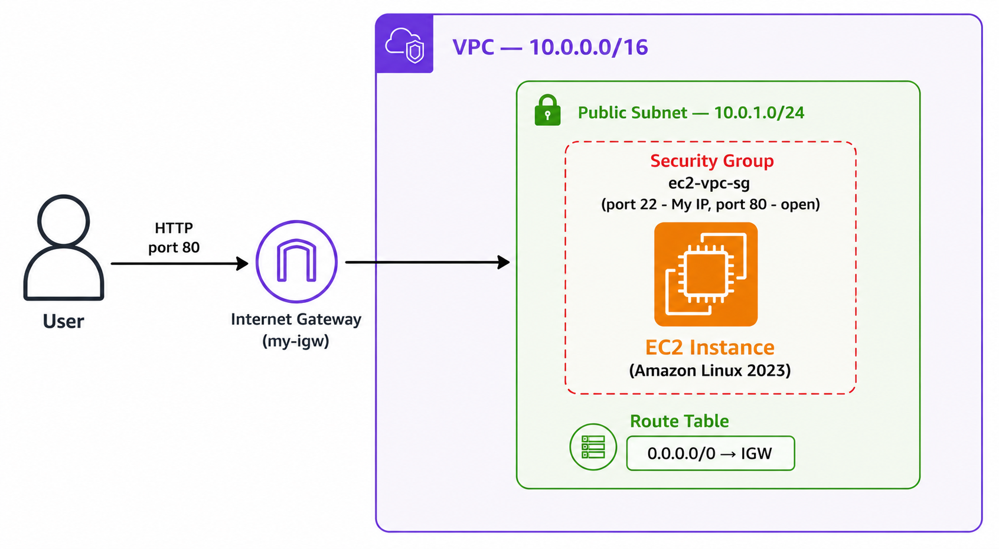
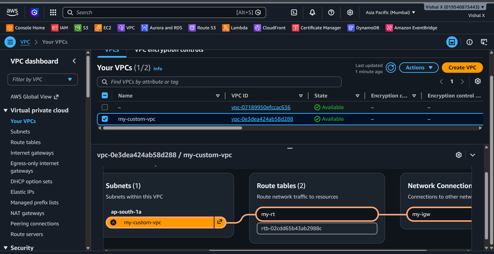
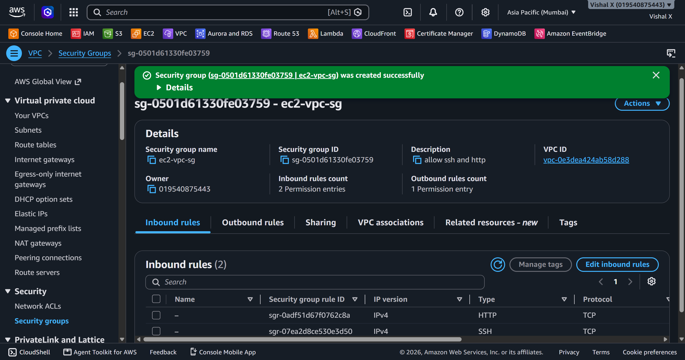
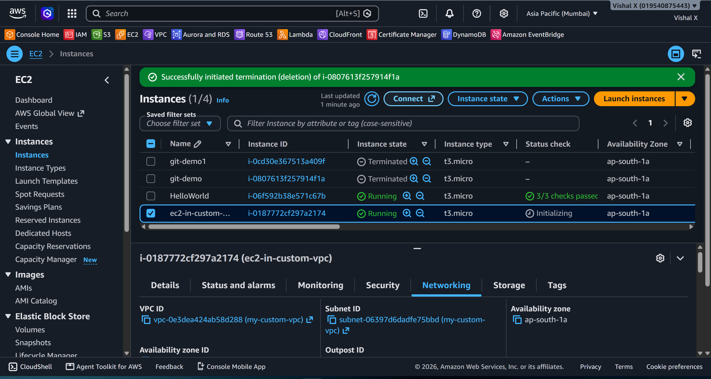
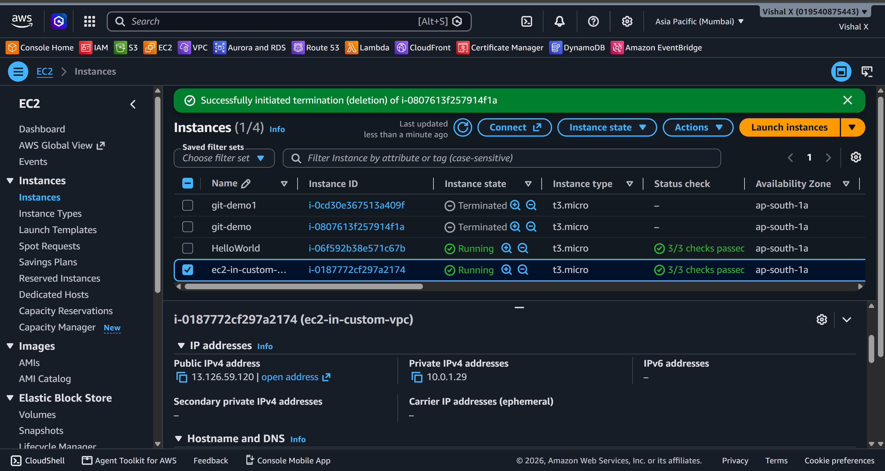
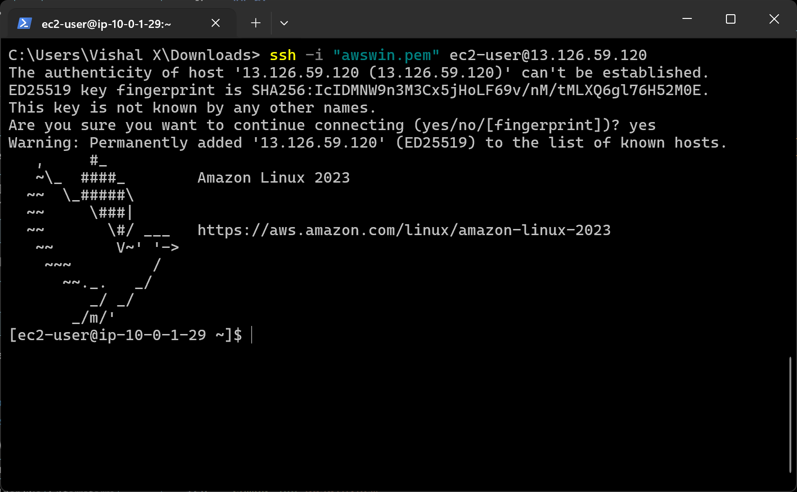
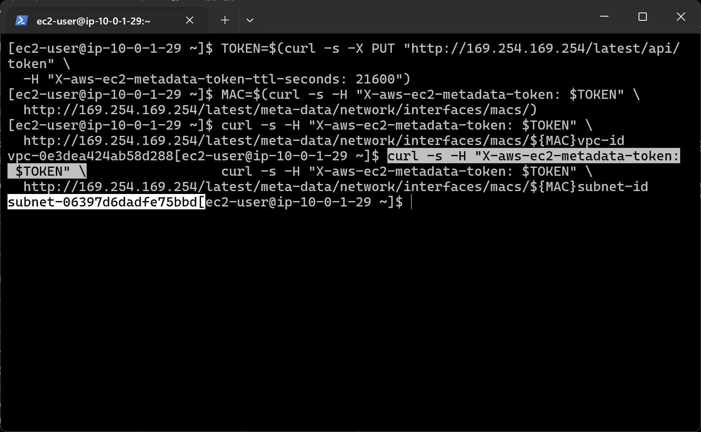
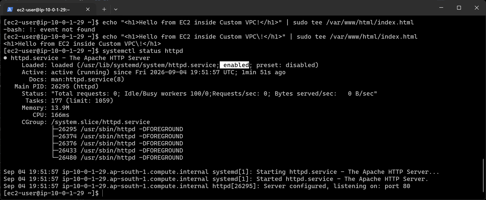
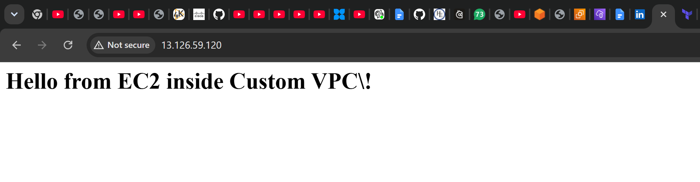
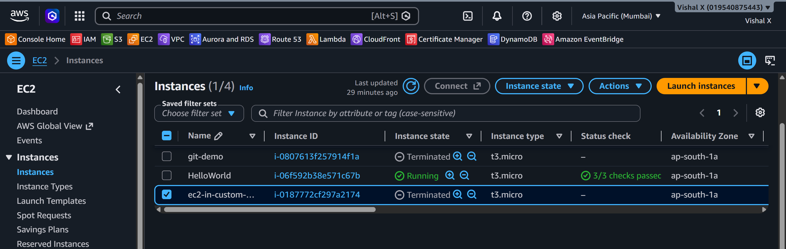

EC2 Inside Custom VPC
Fifth project. Basically combining Project 1 and Project 4. I launched an EC2 instance inside the custom VPC I built earlier instead of using the default one. Wanted to make sure the networking I set up actually works end to end.
What I built
An EC2 instance sitting inside my custom VPC — public subnet, internet gateway, security group, Apache running, page loading in the browser.

Services used
| Service | What I used it for |
|---|---|
| VPC | Custom network — not the default AWS one |
| Subnet | Public subnet where the instance lives |
| Internet Gateway | Connects the VPC to the internet |
| Route Table | Routes traffic from the subnet out to the internet |
| EC2 | The virtual server |
| Security Group | Opens port 22 (SSH) and port 80 (HTTP) |
Resources I created
| Resource | Value |
|---|---|
| Region | ap-south-1 |
| VPC | my-custom-vpc |
| VPC CIDR | 10.0.0.0/16 |
| Public Subnet | my-custom-subnet |
| Subnet CIDR | 10.0.1.0/24 |
| Internet Gateway | my-igw |
| Route Table | my-rt |
| EC2 Instance | ec2-in-custom-vpc |
| Instance Type | t2.micro |
| Key Pair | awswin |
| Security Group | ec2-vpc-sg |
| Public IP | 13.126.59.120 |
Steps
1. Reused the VPC from Project 4
Still had the VPC running so I used it directly. Had the public subnet, internet gateway attached, route table with 0.0.0.0/0 → IGW, and auto-assign public IP enabled on the subnet.

2. Created a Security Group inside the custom VPC
Had to make sure the security group was created inside my-custom-vpc, not the default VPC.
- Name:
ec2-vpc-sg - VPC:
my-custom-vpc - Inbound rules:
| Type | Port | Source | Why |
|---|---|---|---|
| SSH | 22 | My IP | Connect via SSH |
| HTTP | 80 | 0.0.0.0/0 | Allow web traffic |

3. Launched EC2 inside the custom VPC
- Name:
ec2-in-custom-vpc - AMI: Amazon Linux 2023
- Instance type: t2.micro
- Key pair:
awswin - VPC:
my-custom-vpc - Subnet:
my-custom-subnet - Auto-assign public IP: enabled
- Security group:
ec2-vpc-sg

4. Verified instance is running
Waited for instance state Running and 2/2 checks passed. Copied the public IP.

5. Connected via SSH

6. Verified the instance is inside the custom VPC
Amazon Linux 2023 uses IMDSv2 so a token is needed first before querying metadata.
TOKEN=$(curl -s -X PUT "http://169.254.169.254/latest/api/token" \
-H "X-aws-ec2-metadata-token-ttl-seconds: 21600")
MAC=$(curl -s -H "X-aws-ec2-metadata-token: $TOKEN" \
http://169.254.169.254/latest/meta-data/network/interfaces/macs/)
curl -s -H "X-aws-ec2-metadata-token: $TOKEN" \
http://169.254.169.254/latest/meta-data/network/interfaces/macs/${MAC}vpc-id
curl -s -H "X-aws-ec2-metadata-token: $TOKEN" \
http://169.254.169.254/latest/meta-data/network/interfaces/macs/${MAC}subnet-id
VPC ID and subnet ID matched what I created in Project 4.

7. Installed and started Apache
sudo yum update -y
sudo yum install httpd -y
sudo systemctl start httpd
sudo systemctl enable httpd
echo "<h1>Hello from EC2 inside Custom VPC!</h1>" | sudo tee /var/www/html/index.html

8. Tested from browser
Opened http://13.126.59.120 — page loaded.

9. Cleaned up
Deleted in this order — order matters or AWS won't let you delete the VPC:
- Terminated the EC2 instance
- Deleted security group
ec2-vpc-sg - Detached and deleted the Internet Gateway
- Deleted the subnet
- Deleted the route table
- Deleted the VPC

Screenshots
| # | File | Description |
|---|---|---|
| 01 | screenshots/01-vpc-ready.png |
VPC and subnet |
| 02 | screenshots/02-security-group.png |
Security group |
| 03 | screenshots/03-launch-instance.png |
EC2 launch settings |
| 04 | screenshots/04-instance-running.png |
Instance running |
| 05 | screenshots/05-ssh-connection.png |
SSH connected |
| 06 | screenshots/06-verify-vpc.png |
VPC ID confirmed |
| 07 | screenshots/07-web-server-running.png |
Apache running |
| 08 | screenshots/08-browser-test.png |
Browser test |
| 09 | screenshots/09-cleanup.png |
Cleanup done |
Commands
Things that can go wrong
| Problem | What caused it | How I fixed it |
|---|---|---|
| SSH times out | Security group created in wrong VPC | Recreated it inside my-custom-vpc |
| No public IP on instance | Auto-assign not enabled on subnet | Enabled auto-assign public IPv4 |
| Browser won't load | Port 80 not open | Added HTTP rule to security group |
| Instance launched in wrong VPC | Default VPC selected | Changed to my-custom-vpc in network settings |
| Can't delete VPC | EC2 still running | Terminated the instance first |
| curl metadata returns nothing | IMDSv2 required on AL2023 | Used token-based curl instead |
Security notes
- Security group is inside the custom VPC, not the default one
- SSH is locked to my IP only
.pemkey is in.gitignore— never committed
Cost
t2.micro is free tier. Terminated everything after testing. Internet gateway has a small hourly charge so deleted that too.
What I learned
- How to launch EC2 inside a specific VPC and subnet
- That security groups are scoped to a VPC
- That Amazon Linux 2023 uses IMDSv2 — plain curl won't work for metadata
- How all the networking from Project 4 connects to an actual running server
- The correct order to delete VPC resources